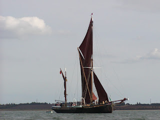
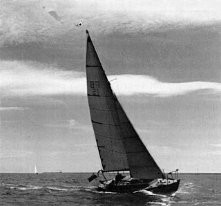

‘Why do you want to republish The Tuesday Boys?’ my youngest brother asked. My immediate answer would be 'Because I love it,' and I know he agrees with me. Libby Purves and Claudia Myatt say the same. But is that sufficient reason to republish?
{kind=link}
The Tuesday Boys is a book about a project to take eight young East London children sailing. It began in 1975, fifty years ago. Will it make any sense to readers today? On one level, yes, belief in the potential for sail training to widen horizons and change lives has been in existence since the late c18th when the Marine Society began taking boys from London workhouses and providing initial training before they went to sea with the merchant navy. Through the c19th and early c20th, while Britain's need for seafarers remained obvious, charities continued to work to ensure that the most deprived inner city children (boys) had their chance to succeed at sea.
More general charities, such as sea scouts and sea cadets, also took young people to sea (usually boys) as an opportunity for character building. After WW2 the need to find a use for redundant sailing vessels fed into this idea. Individual horizons could still be widened, even while the need for men in Britain's navies contracted. One of my jobs these days is to prepare the 'Maritime Charity of the Month' page for Yachting Monthly magazine. There are many voluntary organisations around the country offering young people, or people with difficult lives, opportunities to experience sailing. Very often this is for therapeutic reasons rather than any expectation that they will find work at sea.
In the mid-1970s, when Rozelle Raynes conceived her own unique and imaginative project, my father, George Jones, was secretary and fundraiser for the East Coast Sail Trust (ECST). This was a trust which was re-purposing, maintaining and operating two Thames barges, Thalatta and Sir Alan Herbert, mainly for the benefit of the children of London’s Docklands. That term ‘docklands’ wasn’t then in common use. It was the East London Boroughs such as Tower Hamlets, Southwark, Redbridge and Newham who were individually doing their best to counter the economic and social decline of their areas with a range of horizon-widening projects, such as the ‘Week in Another World’ offered on board sb Thalatta.
 |
| Thalatta |
{kind=link}
I can remember being part of Dad’s various fund-raising
efforts on behalf of the ECST. If available from school or college, my brothers and I would be signed on to travel with Thalatta to the Thames where she would be moored beside Tower Bridge for us to offer plates of Ritz crackers and glasses
of Hirondelle to various donors and dignitaries. In her East London memoir, Limehouse Lil (2006),
Rozelle Raynes recalls these events as, ‘Rather grand affairs at which cabinet
ministers, master mariners, eminent clergy, famous marine painters, pillars of
the House of Lords and a certain number of lesser fry, rubbed shoulders within
the homely interior of the barge.’
She arrived at one such party with a skinny ten-year-old
from a large, impoverished family, whom she had asked to accompany her just to look at the barge,
‘not to go on board or anything like that’. The boy was immediately invited to see the engine room, leaving Rozelle waiting on Tower
Bridge pier in the rain. When he returned, much later, he told her, ‘There
wasn’t half a lot o’ posh people on that boat. One fing I’ll say fer you an’
Dick, you ain’t posh.’
| Fund raising for the East Coast Sail Trust Edward Heath and George Jones |
{kind=link}
Earl’s daughter Lady Rozelle, inheritrix of the impressive Thoresby Hall estate in the Dukeries, Nottinghamshire, accepted the compliment as it was intended. She was a friend to my father and a benefactor of the ECST, but what she was doing, with her husband Dick, and the surprising support of Newham Social Services, was quite different.
'The Tuesday Boys' project began as a way to find a use for Martha. Small, speedy, bright blue Martha McGilda, a 25' Folkboat, had been Rozelle's companion on long, adventurous, often quite scary sailing trips since the mid 1950s, when Rozelle found herself sailing further and further away on her own, to escape 'the problems of the land' -- specifically her inheritance and a marriage doomed to failure.
Several years after her divorce, she met and married GP Dick Raynes. They sailed happily together, voyaging as far as the Lofoten Islands, beyond the Arctic Circle, but Martha began to feel just a little small. A new yacht, Roskilde, was built and delivered in 1974 -- but what was Rozelle to do with Martha? Sell her? But Martha had other ideas:
 |
| Martha McGilda sailing from Essex to the Thames |
.jpg){kind=link}
Dick, by this time, was the deputy medical officer in the London Borough of Newham and was on good terms with senior officials in the social services department. He and Rozelle lived in Limehouse. A new marina was opening within the disused Royal Albert Dock.
Suddenly there was this marvellous plan for using Martha to teach children in long term Care how to handle a boat, and everyone was smiling and saying 'What a splendid idea!' And it was not until many months later that I realised how courageous the leaders of Newham social services had been to give their blessing to something that might so easily have ended in disaster. (TTB p7)
On the surface, perhaps this didn't seem so very far removed from sending children from the London Boroughs away for a week on Thalatta or one of the other philanthropic sail-training vessels plying for hire -- as several still do around the UK today. The differences were subtle but significant: Rozelle was offering both more rigour (the boys would be expected to study towards certificates and would be allowed time out of school to do so) and a longer term commitment. All the boys in a single residential home would participate -- there were eight of them aged 8-13 -- and the offer was open ended. Four boys and a house mother, or other adult, would join Martha every Tuesday afternoon, all year round.
Rozelle and Dick were childless, unwillingly so. After the first four of the Tuesday Boys had spent their first afternoon motoring round and round the dock with a faulty throttle cable, then putting up the jib for a first taste of wind power, before settling down to a noisy, cheerful tea party..jpg){kind=link}
I had often wondered what it would feel like to have the boat full of children, spilling coke and crumbs all over the decks and swinging like monkeys from the boom: and now I knew. It felt wonderful ... (TTB p15)
Rozelle and Dick took the boys and their house mothers on outings, day trips to France and camping on the South Foreland. They introduced them to their friends and in turn became part of their lives – as far as the boys chose. These were lifelong relationships.
The Tuesday Boys project, which began in 1975, took place immediately before the wholesale redevelopment that swept away many small surviving communities (as described in Limehouse Lil). The corner shop by the Royal Albert Dock would close, the ‘Cyprus’ estate be redeveloped for private housing and Martha McGilda would eventually have to leave as the lock gates were dismantled. A similar dismantling was taking place in social care as the Edith Moorey Home, where the boys lived, was closed and they were dispersed into foster care or returned to their families. When Rozelle looked back and wrote this book in 1991, she sketched some of the deep-seated difficulties faced as these white working-class boys became young adults.
{kind=link}
Preparing this edition I've been able to speak to two of the ex-boys, Peter Crago and Stephen Chambers, now fathers and grandfathers themselves. Looking back over the fifty years that has passed since 1975, when he and his companions first set sail down Gallions Reach , Peter is amazed that Rozelle coped with them. ‘We were really naughty boys,’ he said. ‘We were always up to something.’ The ‘Paki-bashing’, ‘Frog-baiting’ and pilfering incidents, described in the book, reveal this wasn’t always innocent mischief. Rozelle didn’t allow such behaviour to pass unchallenged, yet she never lost sight of the extent that the boys were products of their environment, and that they had been cruelly damaged by the various rejections that had led to them being placed in long term care. Peter wonders whether such a free and happy relationship would be possible today? Probably not.
Peter also speaks of her ‘rosy’ attitude to life and remembers that, when the boys’ fun grew wild, she would characteristically laugh and join in. He and Stephen describe Dick as 'like a big kid' though 'he could also be stern'. If there’s a lesson to be drawn from The Tuesday Boys – rather than merely cherishing it -- it may be that we should remind ourselves how much fun matters when people are having a hard time. The formal sail-training aspects were only lastingly significant for two of the group. The others probably benefitted indirectly from the experience of applying themselves to gain new skills and also from learning to deal with tough conditions and the disappointments, as well as the delights of sailing days. They all responded to personal liking and pleasure.
None of the boys found life, work and relationships easy as they left Care. Rozelle and Dick’s commitment to them went far beyond those initial Tuesday afternoons. They became friends who could be trusted, constants within lives where let-downs were too frequent. Of the seven survivors, at least six have managed to earn their livings throughout their lives in a wide range of jobs, though for one or two of them, employment and well-being may still be precarious.When Rozelle died in 2015, all seven survivors attended her funeral, forty years after they had first met. How many teachers or mentors inspire that 100% indication of gratitude? Stephen Chambers spoke from his heart when he said 'Rozelle and Dick were the closest thing to parents that I ever had.'
.jpg){kind=link}
This blog is adapted from my Series Editor's Introduction to the Golden Duck edition of The Tuesday Boys, published 26.9.2025 See golden-duck.co.uk for more information.